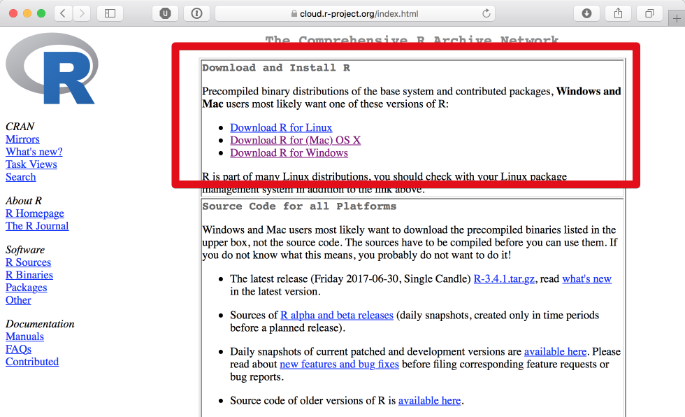
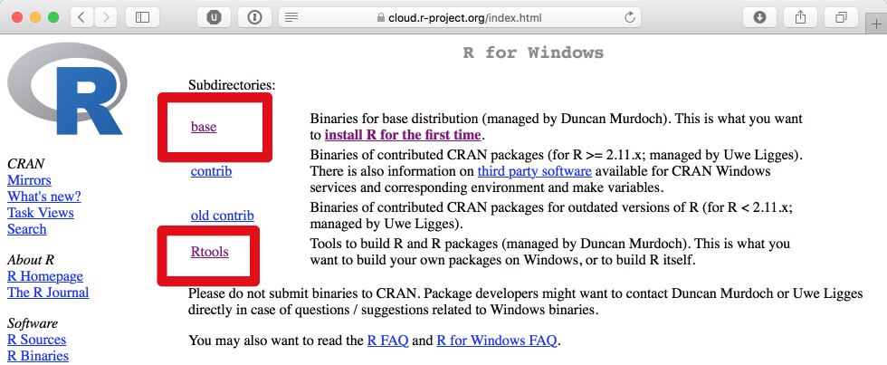
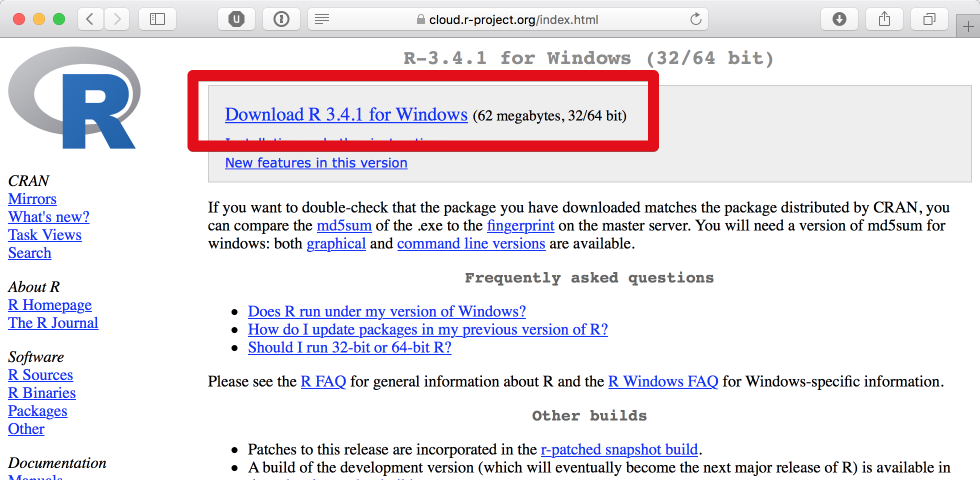
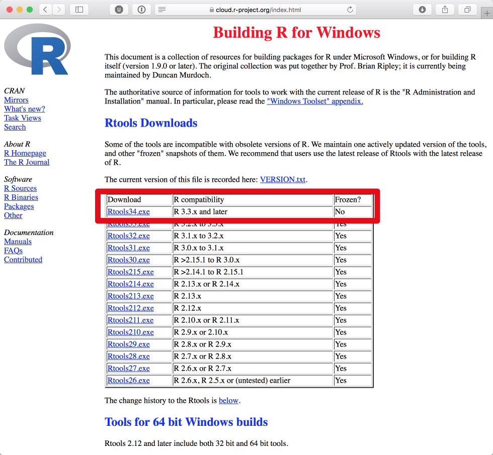
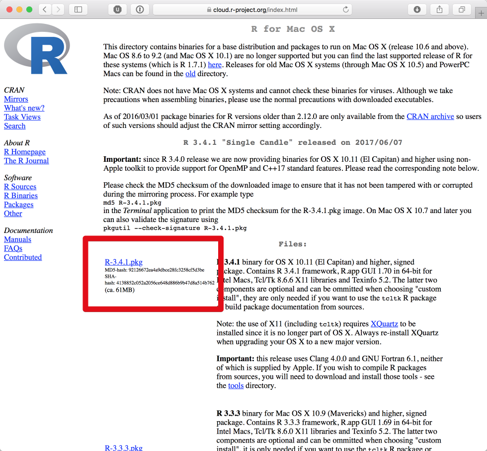
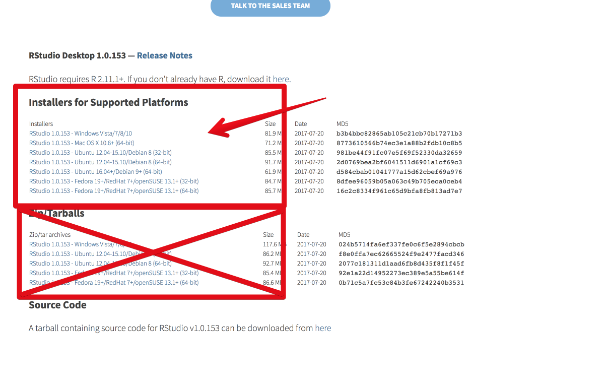

2 Installation
Hier eine kurze Anleitung um R und RStudio zu installieren.
Kurz zum Kontext: R ist eine Programmiersprache, das heißt auch “R installieren” ist anders als “Spotify installieren”.
Ihr installiert zunächst R, und bekommt dann auf dem Desktop Verknüpfungen angeboten für “R GUI” (o.Ä.) — Dabei handelt es sich um “nackte” Konsolenprogramme.
Damit könntet ihr R benutzen, aber es macht beim besten Willen keinen Spaß.
Deshalb installiert ihr RStudio — Ein Programm (wie Spotify, nur ganz anders!), mit dem ihr R komfortabler benutzen könnt.
2.1 R installieren
R bekommt ihr von der offiziellen seite, hier: https://cran.r-project.org/
Ja, die Seite sieht nach heutigen Standards furchtbar alt aus, aber die gibt’s nunmal auch schon ewig und sie hat den Anspruch möglichst spartanisch zu sein um auch auf jedem noch so ranzigen Computer ordentlich dargstellt und ggf. von Scripten ausgelesen zu werden.
2.1.1 Windows
Klickt auf der oben genannte Seite auf Download R for Windows. Vollkommen unerwartet.

Hier benötigt ihr base (der R installer):

…und sicherheitshalber auch Rtools (fragt nicht. Vorerst installiert ihr es einfach, nur für den Fall, das es euch später Probleme erspart).

Da ich akut keinen Windows-Computer zur Hand habe, gehe ich einfach davon aus, dass ihr das Prinzip “.exe-Datei doppelklicken und alles brav mit ja oder OK bestätigen” beherrscht. Schafft ihr bei Spotify ja auch.
Das war die R-Installation!
Und jetzt installiert ihr RStudio
2.1.2 Mac OS X (macOS)
Klickt auf der oben genannte Seite auf Download R for (Mac) OS X. Auch das, vollkommen unerwartet.

- Wenn euer Betriebssystem auf dem aktuellen Stand ist, benutzt die aktuelle Version des R-installers.
- Wenn ihr aus unerfindlichen Gründen noch eine sehr alte OS X version laufen habt:
- Möge die Deität eurer Wahl euch beistehen
- Aktualisiert euer Betriebssystem, oder wenn das nicht möglich ist…
- …müsst ihr vermutlich den Installer mit
snowleopardim Namen benutzen
- Wenn ihr nicht wisst, welche OS X Version ihr benutzt: Versucht’s erstmal mit dem aktuellen Installer, wenn das nicht funktioniert, versucht den älteren. Ansonsten: Googlet.
Ansonsten braucht ihr nichts runterzuladen. Den Installer (die .pkg-Datei) einfach doppelklicken und alles brav bejahen.
Fertig.
2.1.3 Linux
Wenn ihr Linux benutzt, solltet ihr unabhängig von der Geschmacksrichtung auch wissen, wie man da Software installiert.
Es gibt diese Info-Seite für Ubuntu: https://cloud.r-project.org/bin/linux/ubuntu/README.html.
Wenn ihr nicht wisst, was https://<my.favorite.cran.mirror>/bin/linux/ubuntu sein soll, dann setzt für <my.favorite.cran.mirror> am besten einfach cloud.r-project.org ein. Die Zeilen unter “Installation” im verlinkten Dokument würden dann so aussehen (für Ubuntu 18.04 bionic):
deb https://cloud.r-project.org/bin/linux/ubuntu bionic/
Zusätzlich solltet ihr vermutlich einige Systempakete (also außerhalb R) installieren, für den Fall der Fälle.
Für Ubuntu zum Beispiel (nur aus eigener Erfahrung, YMMV):
sudo apt install libcurl4-openssl-dev curl git libxml2-dev libcairo2-devDamit installiert ihr ein paar Pakete, die ihr für manche R-packages als dependencies benötigt.
Die Liste ist nicht vollständig für alle möglichen R packages, aber zumindest alle, die wir im Laufe dieser Intro benutzen oder benutzen könnten sollten damit abgedeckt sein.
2.2 RStudio installieren
RStudio bekommt ihr hier: https://www.rstudio.com/products/rstudio/download/#download

Hier dasselbe Spiel:
Installationsdatei für euer Betriebssystem runterladen und installieren traue ich euch zu.
Enttäuscht mich nicht.
Nach der Installation solltet ihr jedenfalls folgendes Symbol entweder auf eurem Desktop oder in eurem Programmordner finden:
Das wollt ihr anklicken, dann sollte sich RStudio öffnen und ihr habt erfolgreich R und RStudio installiert.
Gratuliere.
Falls ihr Windows 10 benutzt und sich keine Desktopverknüfung erstellt habt, wollt ihr eure Suchfunktion benutzen und “RStudio” suchen. Vollkommen unerwartet, ich weiß.
2.3 RStudio benutzen
Das ist keine Anleitung, das ist eine Aufforderung.
Ihr benutzt ausschließlich RStudio. Alle anderen Desktopverknüpfungen die im Laufe der Installationen erschienen sein sollten könnt ihr getrost löschen, die braucht ihr nicht.
Dazu gehören solche Dinge wie “R Console” oder auch “R GUI” oder ähnliches. Das sind die Verknüpfungen für das reine R, aber wir wollen R ja durch RStudio benutzen.
Trust me, it’s better that way.
In RStudio könnt ihr jetzt vermutlich noch nicht viel machen, außer in der Konsole aus Spaß “print('Wurstwasser')” eingeben und Enter drücken.